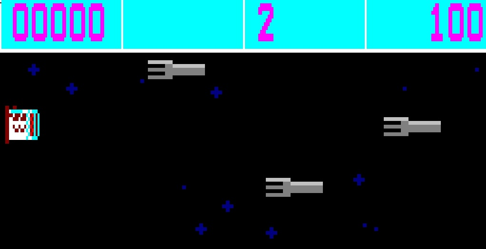
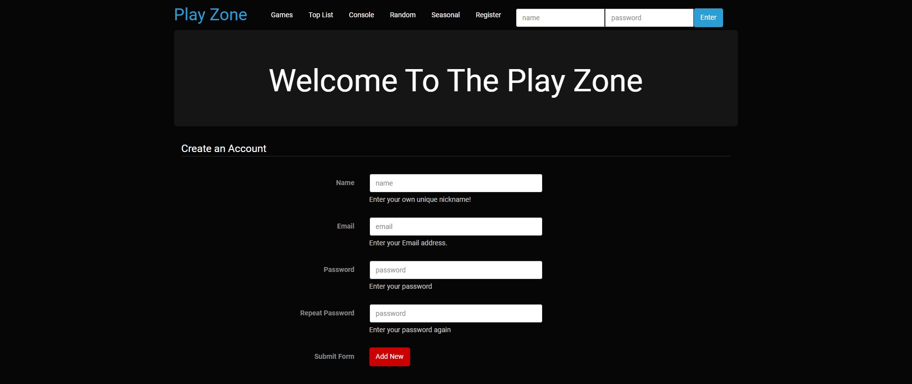

Liverpool John Moores University
Computer Games Development BSc (Hons)
I am currently attending John Moores University in Liverpool, and studying Computer Games Development BSc (Hons). I am currently at Level 5, making my way through the second year at the university.
Below I have listed the modules that I have finished, along with the earned grades.
5210COMP
Software Engineering for Games


Grade:
83.7%
5208COMP
3D Computer Graphics
This module consisted of creating an animated 3D scene with the use of C++ and the Hieroglyph 3 Rendering Engine. All motion in the scene is set manually through code and complex calcualtions with the use of transform matrices.
Grade:
92.15%
4107COMP
Fundamentals of Games Programming
This module was my first introduction to C++, and introduced me to the basics of object oriented programming.

Grade:
80.8%

4209COMP
Maths and Graphics
This was the first module that introduced me to the SFML framework. It has helped me expand my knowledge about C++ and explored the use of objects in a fully code-based framework.

Grade:
97%
4222COMP
Introduction to Web Development
This module has taught me how to develop dynamic, object-oriented websites. A great amount of knowledge from this course was used to develop this website. The coursework included developing a website with a working login system, that supports user ratings and reviews..
Grade:
82.5%
4200COMP
Introduction to Programming
This module covered the basics of programming and developing applications using the Java language.
Grade:
86%
4204COMP
Data Modelling


This module has taught me how to build databases using Microsoft Access and Excel. It has also proved a great help in understanding data types and using them correctly with various applications, for example in save systems.